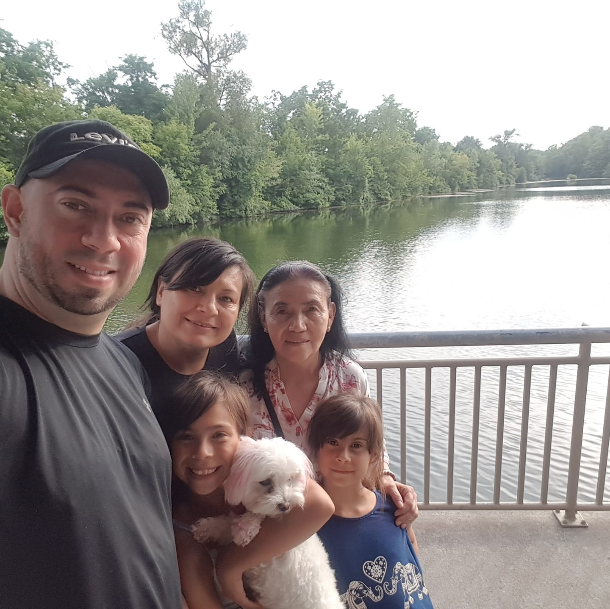

My name is Alexis Yepes Sanabria. I was born in Colombia, a beautiful country that is located in South America. I grew up in a time when technology was only seen in Hollywood movies or read in sci-fi books. Nowadays, our lives have been taken over by a single-portable-machine: The Smartphone.
I began teaching myself how to play the guitar when I was 6 years old. However, a year later I began taking guitar lessons until high school. After graduating from high school, I decided to enroll in a music program. However, the computer world was also catching my attention. So after some discussion with my parents, I made the decision to enroll in a computer programming program back in 2002. I was enjoying learning about computers (and playing in a Rock Band), when the political climate of my country forced me to leave. Unfortunately, there was a war going on between the rebels and the government, where young people were being recruited against their will. As a result, my parents made me flee Colombia and I ended up living in the USA- the country where I met the person I was going to be sharing my life with. After a couple of years in the US, we came to Canada, the most beautiful country in the world. I instantly fell in love with its people, its weather (believe it or not, Winter is my favourite season), and most of all, its respect for the human being. Many years have passed, I got married, had children, and now...I'm back in the Computer World. Hell yeah!!!